دليل الاستعمال — من تسجيل المؤسسة إلى آخر خدمة، خطوة بخطوة
هذا الدليل موجه لمديري المؤسسات والسكرتارية. يشرح كيف تُسيِّر مؤسستك على ArwaEduc: التسجيل، التلاميذ، الحضور، المالية، النقط، التواصل مع الآباء، النقل والوثائق.
نسخة نونبر 2026 · الصور مأخوذة من مؤسسة تجريبية بأسماء وهمية
المحتوى
إنشاء حساب مؤسستك
الدخول، اللغة والإعدادات
لوحة القيادة
تحضير السنة: الأساتذة، الأسعار والمجموعات
تسجيل التلاميذ
الحضور
المالية: الأداءات، الوصولات والأجور
النقط، الواجبات والأنشطة
أولياء الأمور وفضاؤهم
فضاء الأستاذ
فضاء التلميذ
التواصل: الإعلانات، العطل وواتساب
النقل المدرسي
الوثائق
فضاء السكرتارية
عدة مؤسسات وتغيير الباقة
على الهاتف
من يفعل ماذا؟
المالككل شيء، وعدة مؤسسات
المديرتسيير المؤسسة كاملة
السكرتاريةالعمل اليومي
الأستاذالنقط والواجبات من هاتفه
ولي الأمرمتابعة أبنائه من هاتفه
1إنشاء حساب مؤسستك
تبدأ كل مؤسسة بإنشاء حسابها من صفحة التسجيل. تستغرق العملية دقيقتين، وتمنحك 15 يوماً من التجربة المجانية دون بطاقة بنكية.
افتح صفحة التسجيل من موقع ArwaEduc (زر «إنشاء حساب»)، أو من الرابط الذي أرسله لك المندوب التجاري.
اختر نوع مؤسستك: مدرسة خاصة، مركز دعم مدرسي، تكوين مهني، مركز لغات أو حضانة. تتكيف القوائم مع هذا الاختيار.
اختر المدة (شهري، 6 أشهر، سنوي) ثم الباقة. يظهر الثمن النهائي مباشرة أسفل الخانات.
أدخل رمز المندوب التجاري. الرمز إلزامي؛ إذا لم يكن لديك رمز، انقر على «تواصل معنا عبر واتساب».
أدخل اسمك وبريدك الإلكتروني وكلمة مرور (8 أحرف على الأقل)، ثم انقر على إنشاء حسابي.
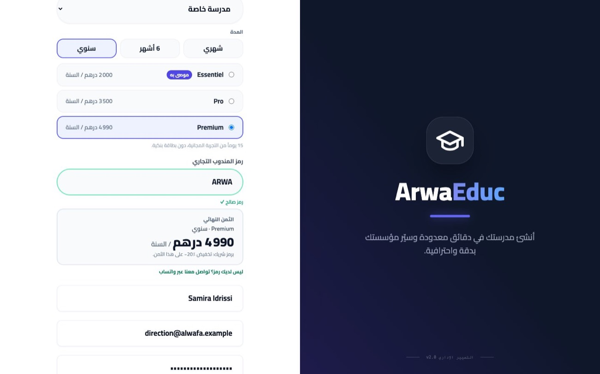
صفحة التسجيل: النوع، المدة، الباقة، الرمز والثمن النهائي
برمز شريك (مندوب شريك) تستفيد تلقائياً من تخفيض يظهر على الثمن النهائي.
بعد التسجيل تدخل مباشرة إلى المنصة، في صفحة الإعدادات، لتكمل معلومات مؤسستك.
2الدخول، اللغة والإعدادات
تدخل إلى المنصة بالبريد الإلكتروني وكلمة المرور. يمكنك اختيار اللغة العربية أو الفرنسية في أي وقت.
تسجيل الدخول
افتح صفحة الدخول، أدخل بريدك الإلكتروني وكلمة المرور، ثم انقر على الدخول إلى المنصة.
إذا كانت لديك عدة مؤسسات (فروع)، اختر المؤسسة التي تريد العمل عليها.
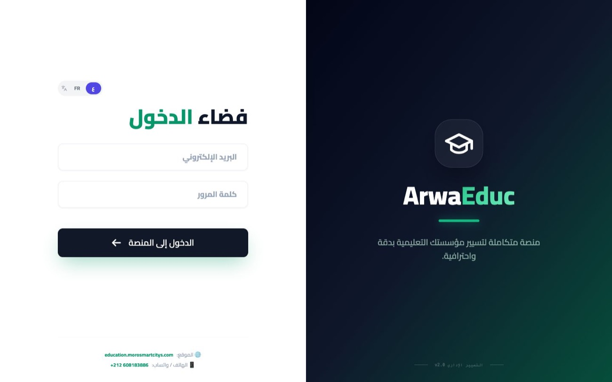
صفحة الدخول
اختيار اللغة والمظهر
في أعلى كل صفحة يوجد زر FR / ع لتغيير اللغة: بالعربية تنقلب الواجهة كاملة من اليمين إلى اليسار. بجانبه زر الوضع الفاتح/الداكن. يُحفظ اختيارك على هذا الجهاز. على الهاتف، زر اللغة في أسفل القائمة.
ملف المؤسسة
من القائمة، افتح الإعدادات.
في تبويب ملف المؤسسة، حمّل شعار مؤسستك: يظهر في القائمة وعلى الوصولات والوثائق.
أكمل اسم المؤسسة، المدير، المدينة، العنوان والهاتف، ثم انقر على حفظ الملف.
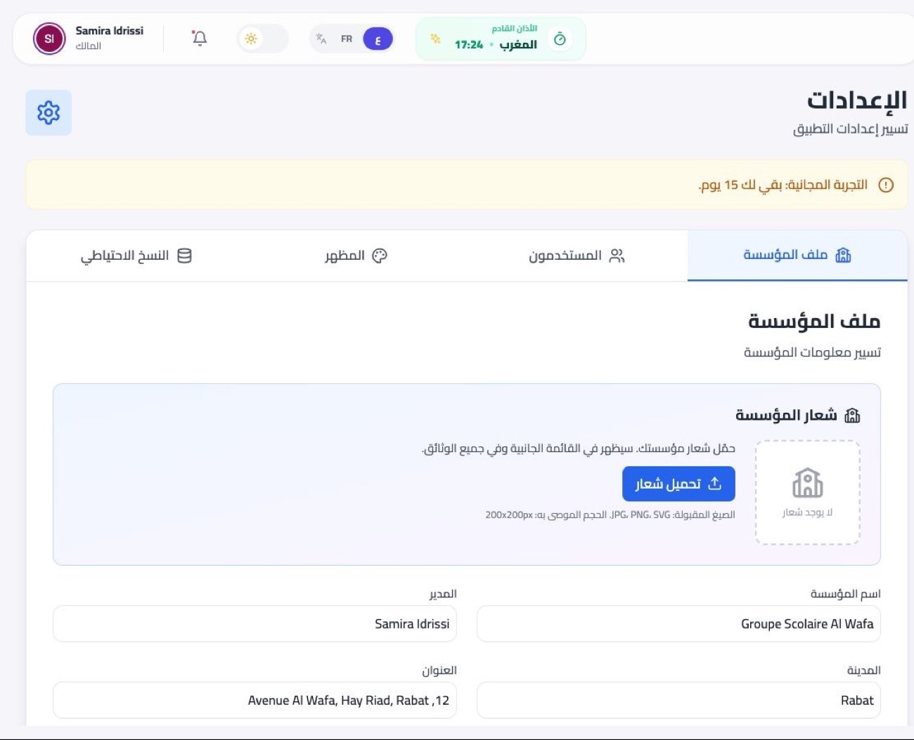
الإعدادات: ملف المؤسسة
الحسابات: السكرتارية والمدراء
من الطاقم ← المستخدمون أنشئ حساباً لكل شخص يعمل على المنصة (مدير أو سكرتارية) ببريده وكلمة مرور. لكل دور صلاحياته: السكرتارية لا ترى إلا ما تحتاجه يومياً (التسجيلات، الحضور، الوصولات…).
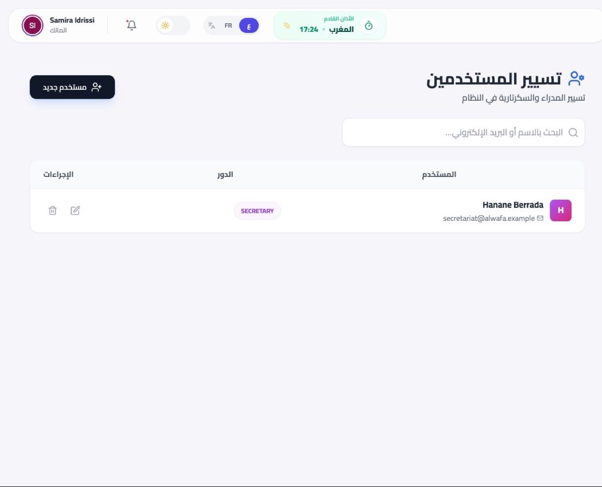
لائحة المستخدمين
3لوحة القيادة
هي أول صفحة بعد الدخول. تعطيك في نظرة واحدة وضعية مؤسستك هذا الشهر.
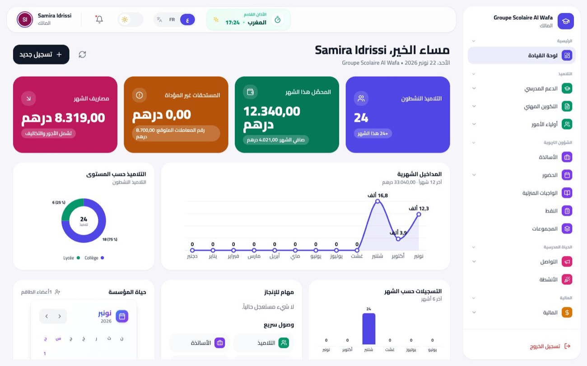
لوحة القيادة
البطاقات الأربع: التلاميذ النشطون، المحصَّل هذا الشهر (والصافي بعد المصاريف)، المستحقات غير المؤداة، ومصاريف الشهر. تحتها: المداخيل الشهرية، التلاميذ حسب المستوى، التسجيلات حسب الشهر، وكالندريي.
مهام للإنجاز: تنبيهات قابلة للنقر، مثل تذكير الآباء بالمستحقات أو تلاميذ بدون تسجيل. وصول سريع: أزرار نحو الصفحات الأكثر استعمالاً.
زر تسجيل جديد في أعلى الصفحة يفتح استمارة التسجيل مباشرة.
4تحضير السنة: الأساتذة، الأسعار والمجموعات
قبل تسجيل التلاميذ، أدخل أساتذتك وأسعارك، ثم أنشئ المجموعات مع استعمال الزمن. الحضور والنقط والواجبات تعتمد كلها على المجموعات.
1. الأساتذة
افتح الأساتذة ثم أستاذ(ة) جديد(ة).
أدخل الاسم والهاتف والمواد المدرَّسة والمستويات.
اختر نوع الأداء: بالساعة، أجرة ثابتة، أو نسبة عن كل تسجيل. يُستعمل هذا لاحقاً في حساب الأجور.
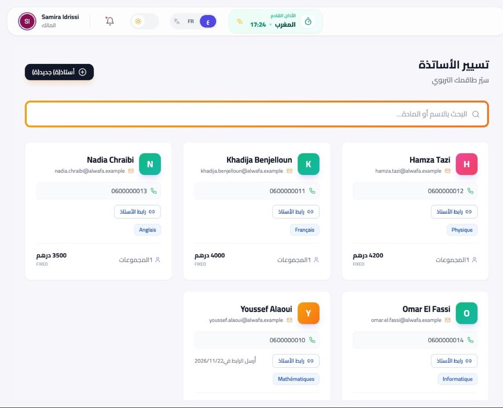
لائحة الأساتذة
2. الأسعار
في المالية ← الأسعار حدد ثمن كل مادة حسب المستوى. تستعمل استمارة التسجيل هذه الأسعار لحساب المبلغ تلقائياً.
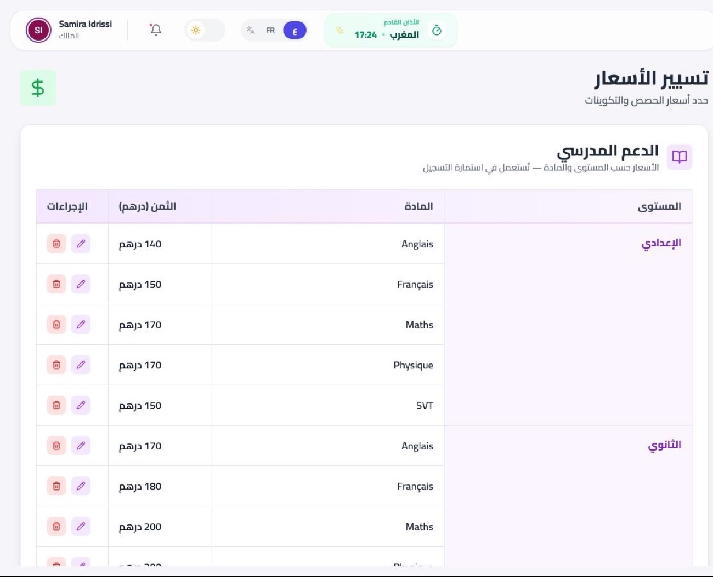
الأسعار حسب المستوى والمادة
3. المجموعات واستعمال الزمن
افتح المجموعات ثم مجموعة جديدة.
أدخل اسم المجموعة (مثال: Maths 3AC)، المستوى، المادة، الأستاذ والقاعة.
في استعمال الزمن، أضف الحصص: اليوم وساعة البداية والنهاية (بين 08:00 و23:30). يمكن إضافة عدة حصص في اليوم.
يمكنك إضافة رابط مجموعة واتساب ليفتحه الجميع من لائحة المجموعات.
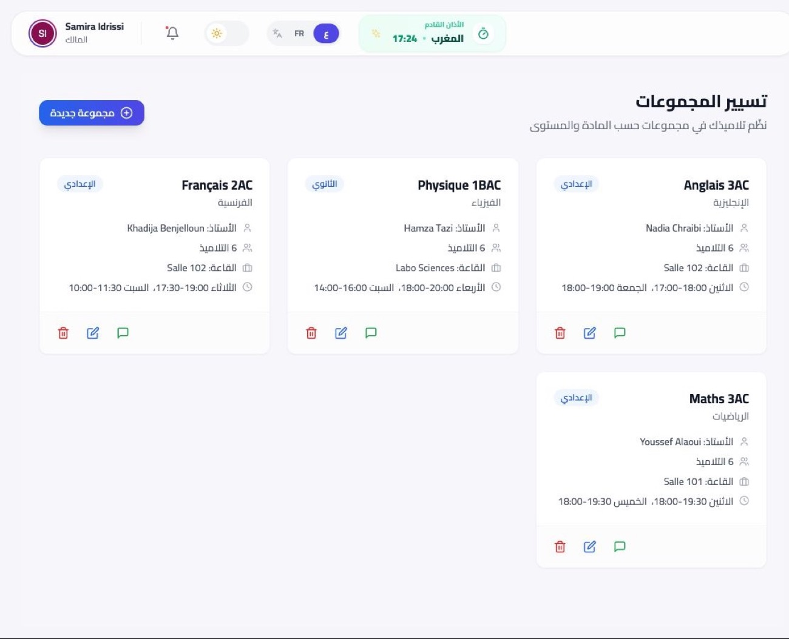
بطاقات المجموعات
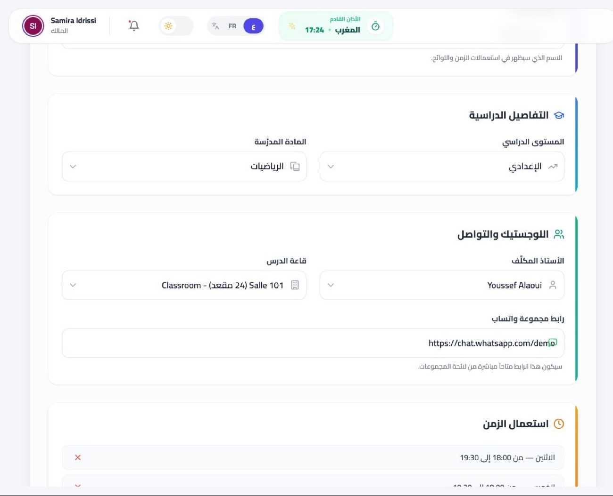
تعديل مجموعة: استعمال الزمن
الحصص المسجلة في استعمال الزمن هي التي تظهر في صفحة الحضور وعند الآباء («الحصة القادمة»).
5تسجيل التلاميذ
طريقتان: تسجيل تلميذ واحد عبر الاستمارة، أو استيراد لائحة كاملة من Excel في دقيقة.
أ. تسجيل تلميذ واحد
افتح الدعم المدرسي ← التسجيلات (أو زر تسجيل جديد).
املأ المعلومات الشخصية للتلميذ ومعلومات ولي الأمر (الاسم، صلة القرابة، الهاتف).
اختر المستوى الدراسي ثم المواد: يُحسب المجموع تلقائياً في «الملخص» (واجبات التسجيل + المواد).
انقر على حفظ التسجيل. يمكنك طباعة الوصل مباشرة.
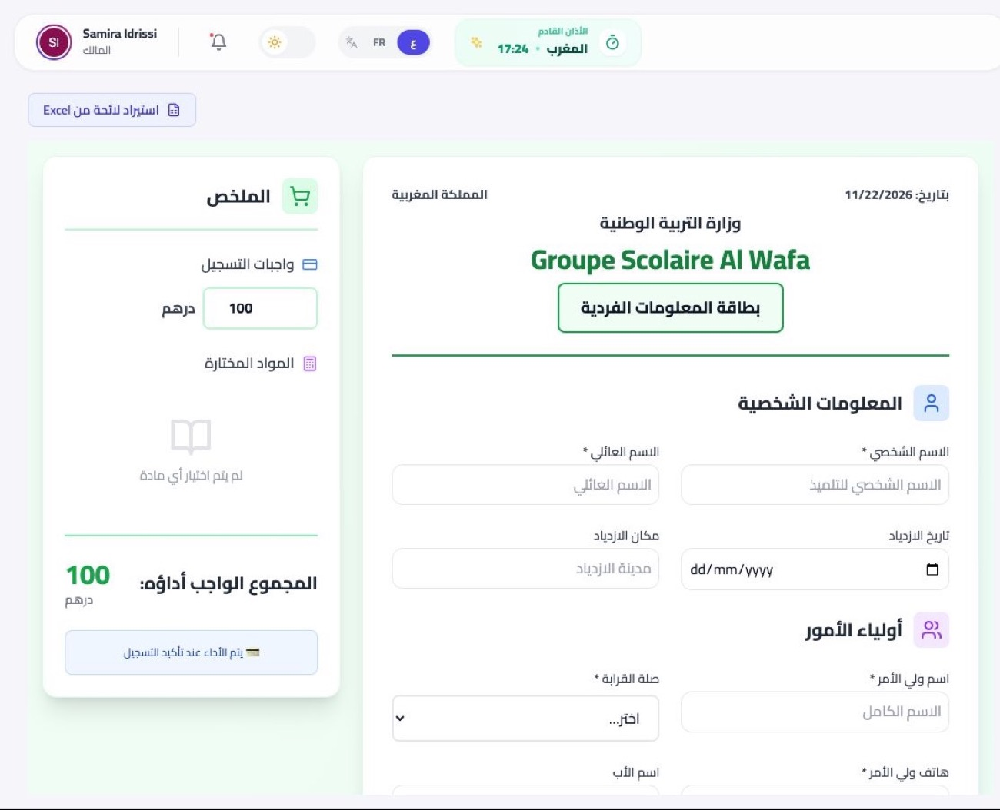
استمارة التسجيل والملخص
ب. استيراد لائحة من Excel
افتح الاستيراد من Excel. يمكنك تحميل النموذج، أو استعمال ملفك الحالي (سطر لكل تلميذ، والعناوين في السطر الأول).
اختر الملف (.xlsx أو .xls أو .csv). تتعرف المنصة على الأعمدة تلقائياً؛ تحقق منها وصحح ما يلزم.
انقر على التحقق من الأسطر: كل سطر يظهر «صالح» أو «مكرر» أو «خطأ» مع السبب.
إذا كانت مجموعات الملف غير موجودة، فعّل إنشاء هذه المجموعات تلقائياً، ثم انقر على استيراد.
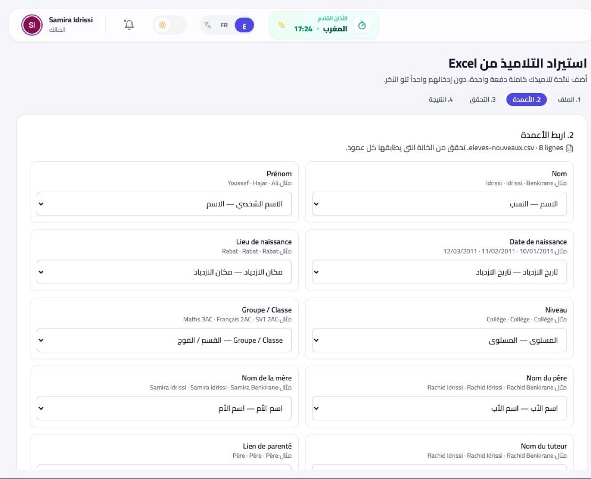
ربط الأعمدة
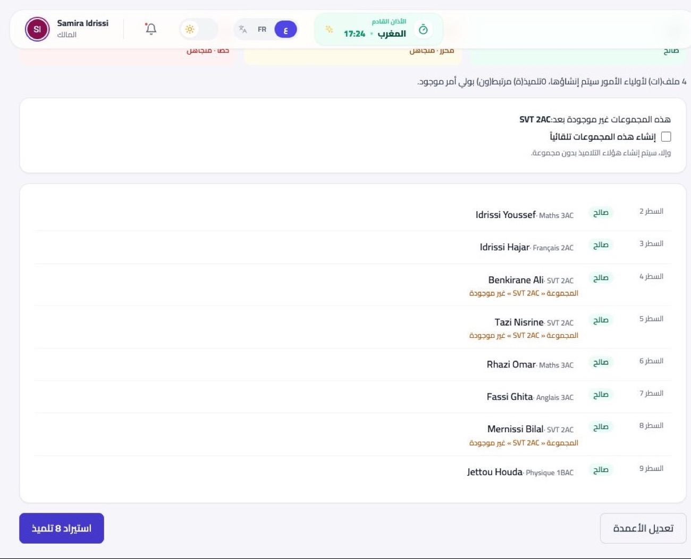
التحقق من الأسطر
يُنشئ الاستيراد أيضاً ملفات أولياء الأمور: الإخوة الذين لهم نفس هاتف ولي الأمر يُربطون بنفس الولي.
ج. لائحة التلاميذ وملف التلميذ
في التلاميذ تجد كل التلاميذ مع البحث والتصفية حسب المستوى. انقر على تلميذ لفتح ملفه: المعلومات، التسجيلات، المالية (الأداءات والرصيد) والحضور، بالإضافة إلى اشتراك النقل إن وُجد.
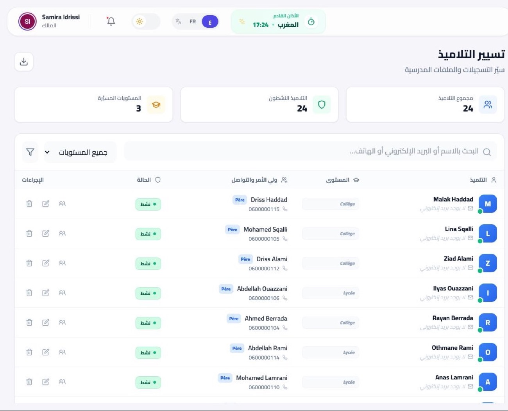
لائحة التلاميذ
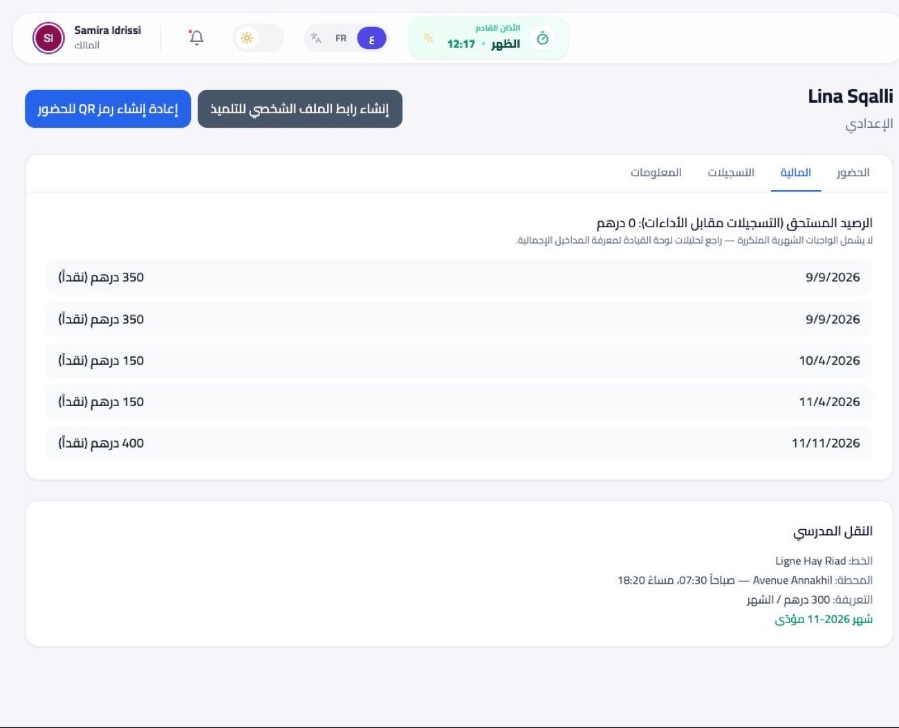
ملف التلميذ: المالية
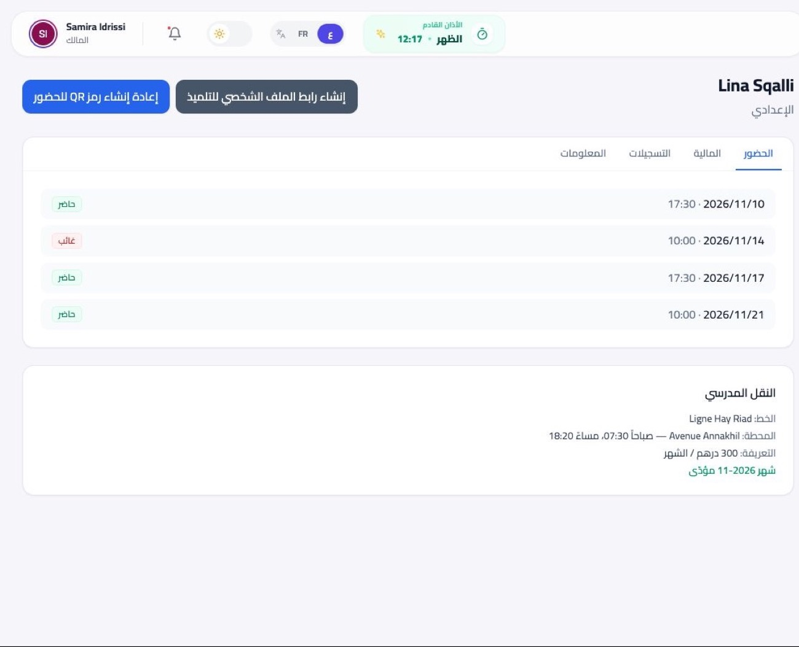
ملف التلميذ: الحضور
من ملف التلميذ يمكنك أيضاً إنشاء رابط الملف الشخصي للتلميذ ورمز QR للحضور (بطاقة يُمسح عليها عند الدخول).
6الحضور
يُسجَّل الحضور على حصص استعمال الزمن، يدوياً أو بمسح رمز QR. ويُخبَر الآباء تلقائياً بالغيابات.
حضور الأسبوع
افتح الحضور ← حضور الأسبوع واختر المجموعة.
يظهر أسبوع المجموعة مع حصصها. اللون الأخضر: الحضور مسجل؛ البرتقالي: تلاميذ لم يُسجَّلوا بعد.
انقر على حصة لتسجيل الحضور: ح حاضر، م متأخر، غ غائب، ب غياب مبرر (مع السبب). زر الباقون حاضرون يسجل الجميع حاضرين دفعة واحدة.
انقر على حفظ.
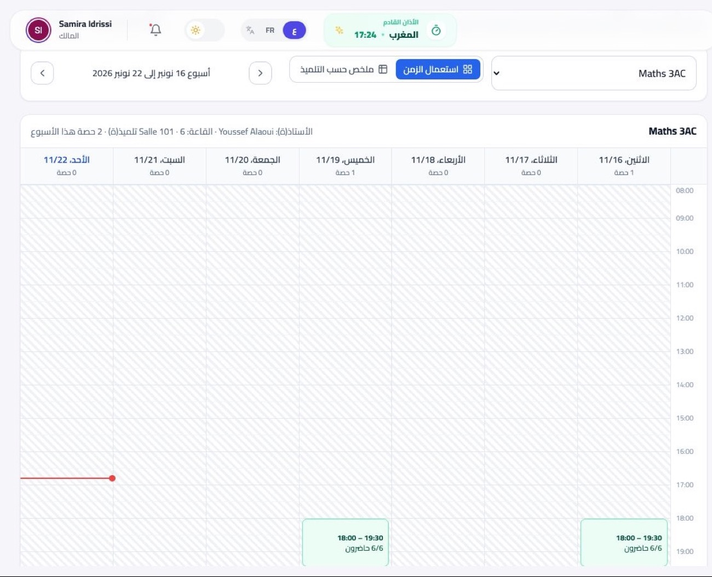
حضور الأسبوع لمجموعة
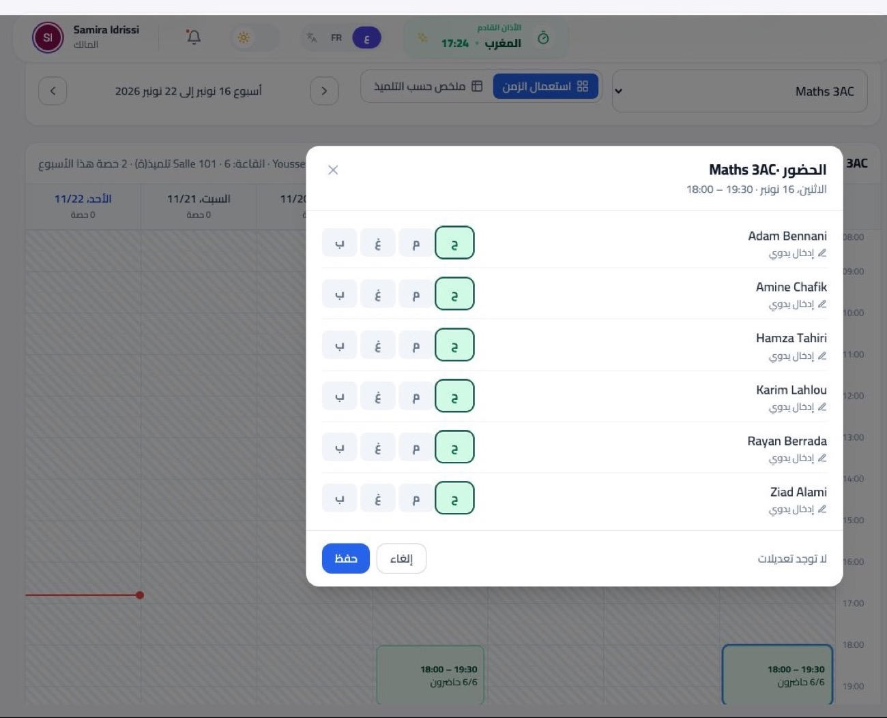
تسجيل الحضور لحصة
تبويب ملخص حسب التلميذ يعرض حضور كل تلميذ خلال الأسبوع ونسبة حضوره. زر طباعة يطبع ورقة الأسبوع.
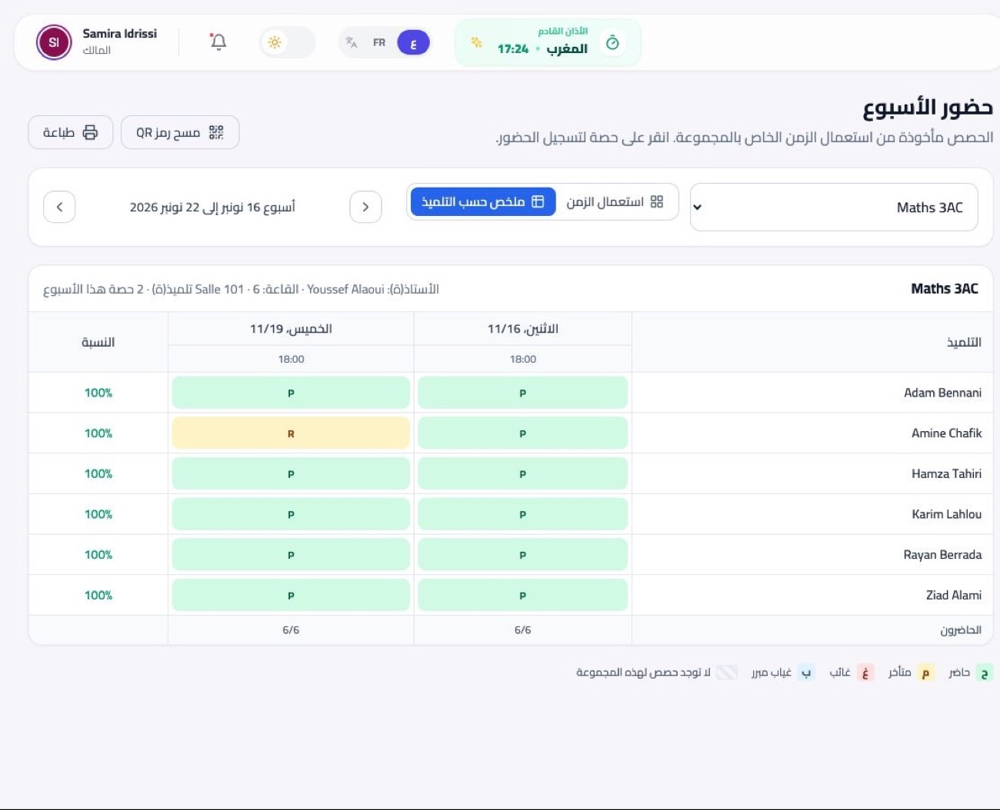
الملخص حسب التلميذ
الحضور بمسح رمز QR
افتح مسح رمز QR، اختر المجموعة، ثم وجّه الكاميرا نحو بطاقة التلميذ. يُسجَّل الحضور (أو التأخر) فوراً على الحصة الجارية.
7المالية: الأداءات، الوصولات والأجور
كل الأموال الداخلة والخارجة في مكان واحد، مع وصولات قابلة للطباعة على الطابعة الحرارية.
الوصولات
في المالية ← الوصولات يظهر وصل لكل تسجيل. انقر على أيقونة الطباعة لطباعته (عرض 80 ملم). يمكنك أيضاً إنشاء وصل حر (خدمات، مواد…).
أدخل نقطة كل تلميذ (أو «غ» للغائب). يُحفظ كل إدخال تلقائياً.
انقر على نشر ليرى الآباء النقط. تبويب بيان النقط يحسب المعدلات والرتبة ويطبع البيانات.
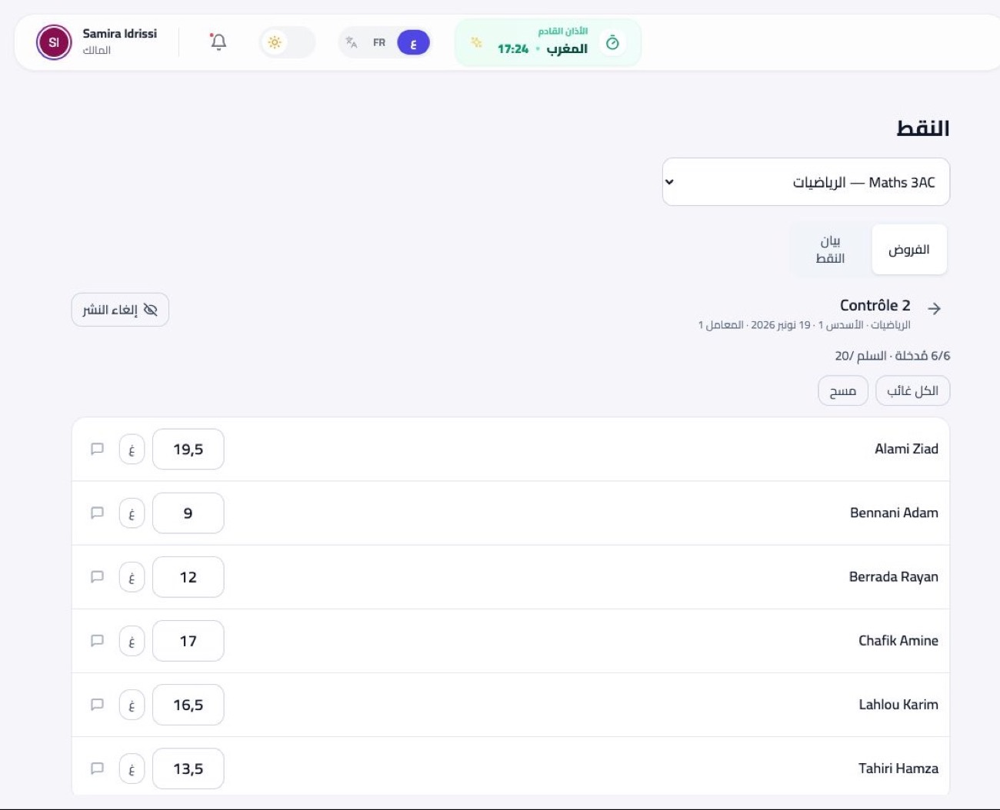
إدخال النقط
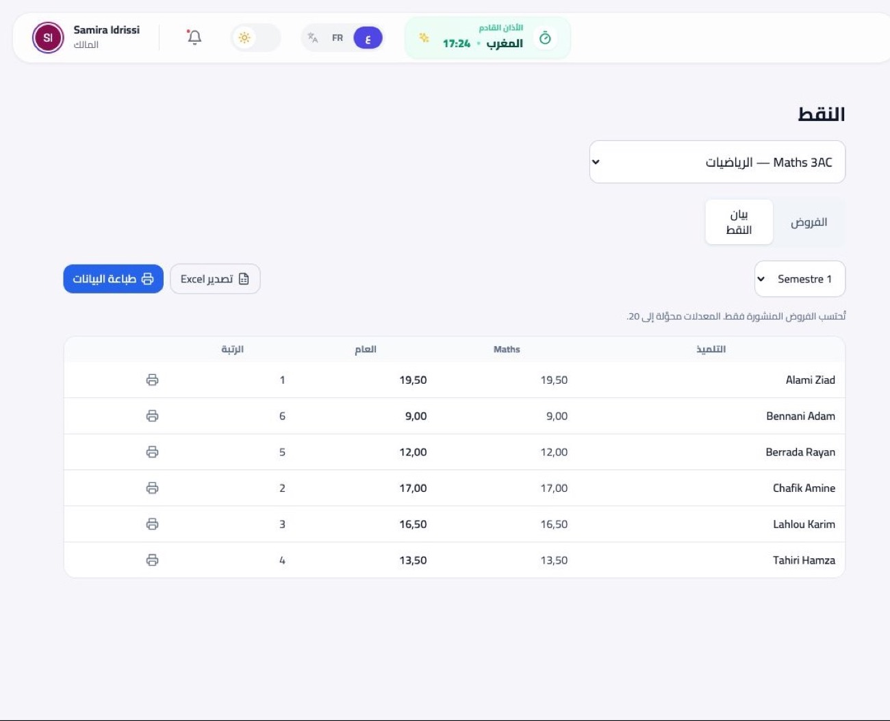
بيان النقط
الواجبات المنزلية
في الواجبات المنزلية اختر المجموعة وأضف الواجب مع تاريخ التسليم. يظهر للآباء في «واجبات للإنجاز».
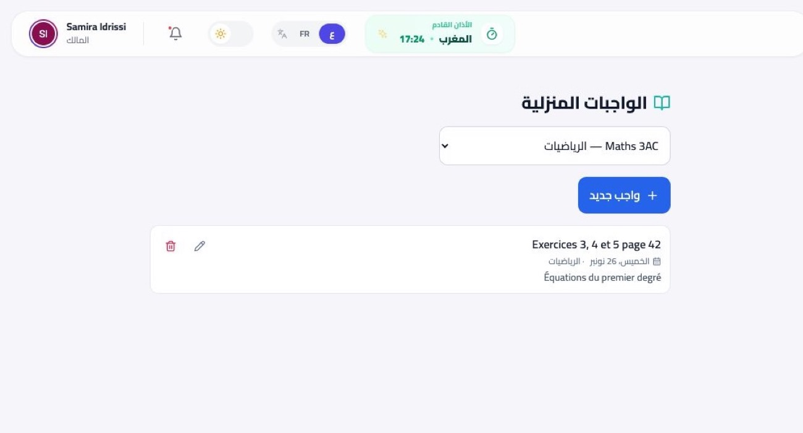
الواجبات المنزلية لمجموعة
الأنشطة والخرجات
في الأنشطة انقر على نشاط جديد: العنوان، التاريخ، المكان، الثمن، وصورة الغلاف.
فعّل «طلب موافقة أولياء الأمور» وحدد آخر أجل للرد إذا كانت خرجة.
اختر المعنيين (جميع التلاميذ أو بعض المجموعات) ثم انقر على نشر: يتوصل الآباء بإشعار.
افتح النشاط لتتبع الردود، تسجيل من أدّى، تذكير من لم يردّوا، وتصدير اللائحة إلى Excel.
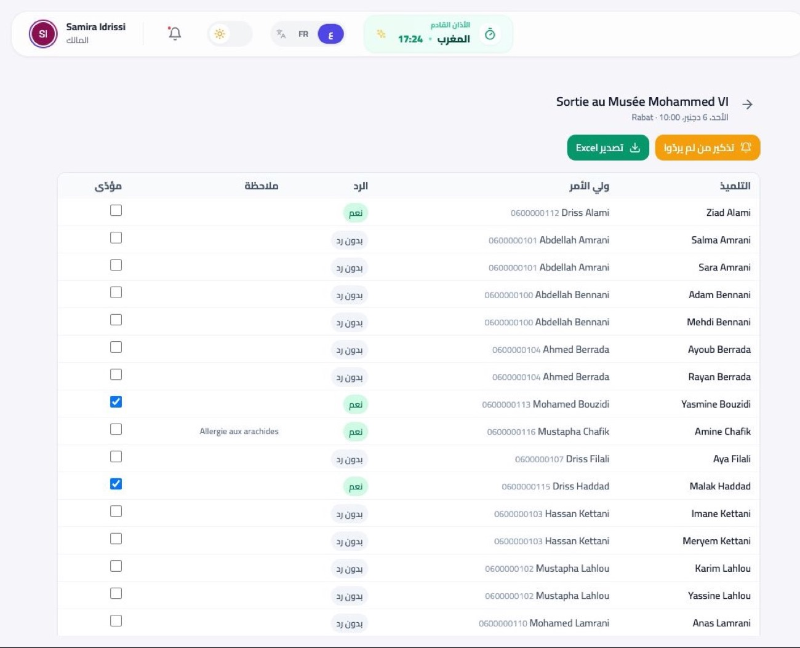
ردود الآباء على خرجة
9أولياء الأمور وفضاؤهم
لكل ولي أمر فضاء على هاتفه، بدون كلمة مرور: يكفي رابط شخصي أو رمز QR.
إرسال الروابط
افتح أولياء الأمور ← ولوج أولياء الأمور.
انقر على تحديد أولياء الأمور بدون رابط.
أرسل الروابط عبر واتساب (زر لكل ولي)، أو انقر على طباعة بطاقات QR لتوزيعها على الآباء.
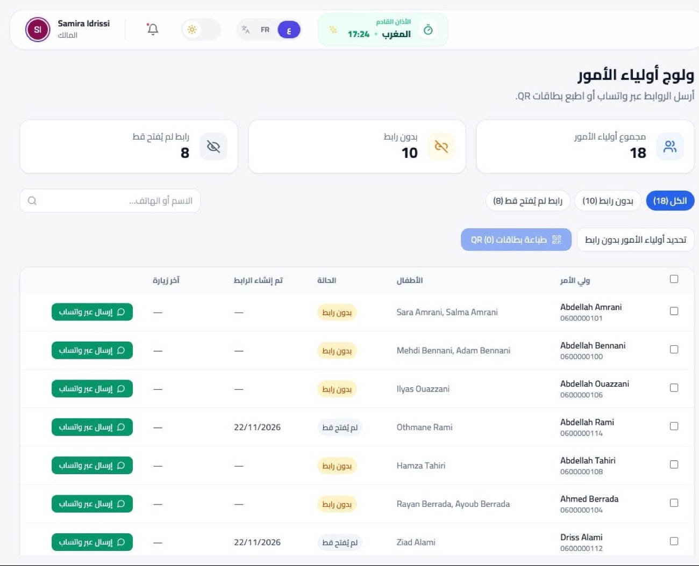
ولوج أولياء الأمور: الروابط وبطاقات QR
لأسباب أمنية، لا يُعرض الرابط إلا مرة واحدة. إذا ضاع، أنشئ رابطاً جديداً: الرابط القديم يتوقف عن العمل.
ما يراه الآباء
الرئيسية (حضور اليوم، الحصة القادمة، المبلغ المتبقي، النشاط القادم، الواجبات وآخر النقط)، الحضور، الأداءات، الدراسة (النقط والواجبات) والمؤسسة (الإعلانات، العطل، الأنشطة). يتنقل الولي بين أبنائه من الأعلى، ويختار العربية أو الفرنسية.
الرئيسية
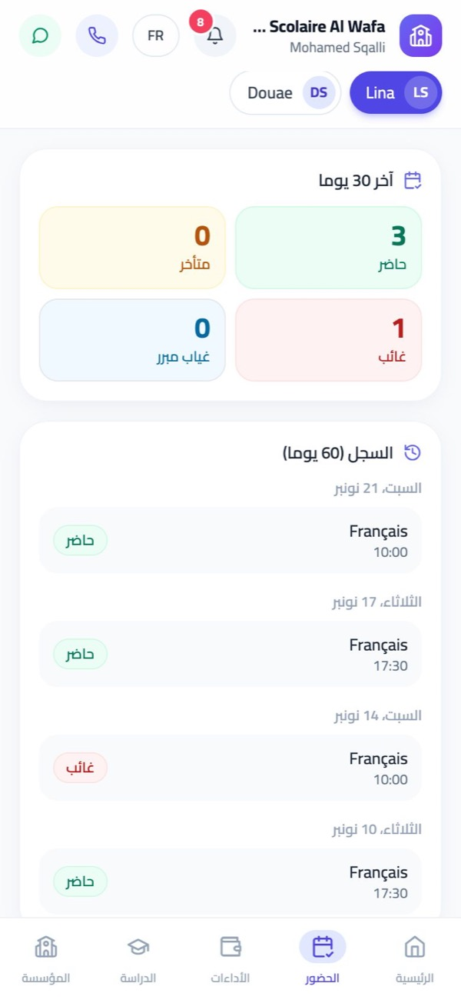
الحضور
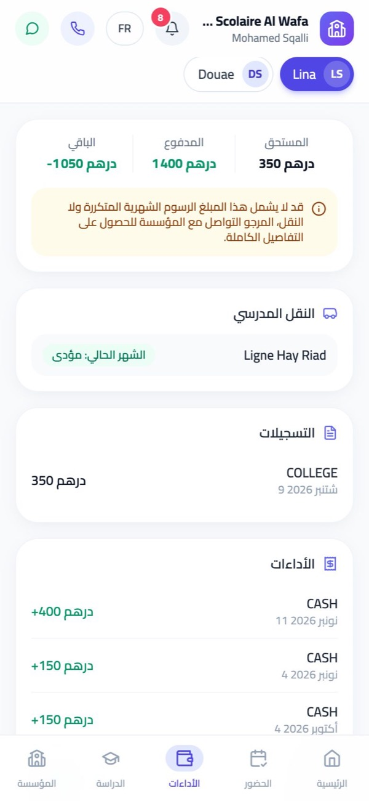
الأداءات
10فضاء الأستاذ
يُدخل الأستاذ النقط والواجبات من هاتفه، عبر رابط شخصي بدون كلمة مرور.
في الأساتذة، انقر على رابط الأستاذ للأستاذ المعني، ثم أرسله له عبر واتساب.
لكل تلميذ فضاء خاص به، على الهاتف أو الحاسوب، عبر رابط شخصي بدون كلمة مرور.
افتح ملف التلميذ (التلاميذ ← اسم التلميذ) ثم انقر على إنشاء رابط الملف الشخصي للتلميذ.
أرسل الرابط للتلميذ (أو لولي أمره). لا يُعرض الرابط إلا مرة واحدة؛ إذا ضاع، أنشئ رابطاً جديداً.
يرى التلميذ: المبالغ (الواجب أداؤه، المؤدّى، الرصيد)، حصصه ومجموعاته، استعمال الزمن، الإعلانات، العطل وسجل حضوره. يختار العربية أو الفرنسية بزر FR / ع.
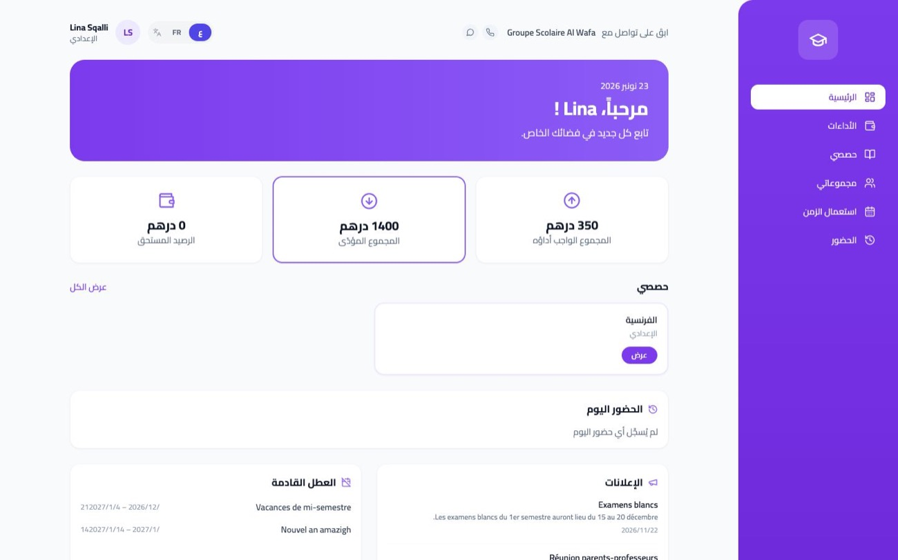
فضاء التلميذ على الحاسوب
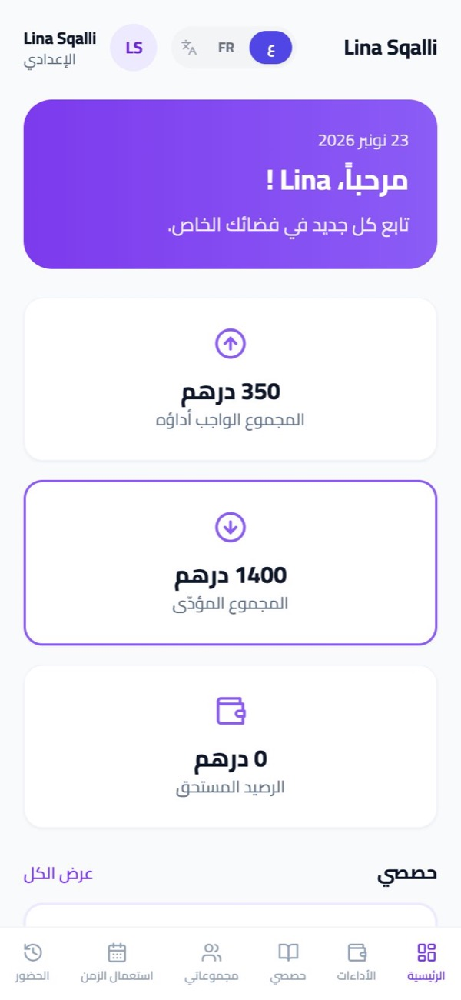
فضاء التلميذ على الهاتف
12التواصل: الإعلانات، العطل وواتساب
الإعلانات
في التواصل ← الإعلانات اكتب العنوان والمحتوى ثم أضف الإعلان. يظهر فوراً في فضاء الآباء والتلاميذ.
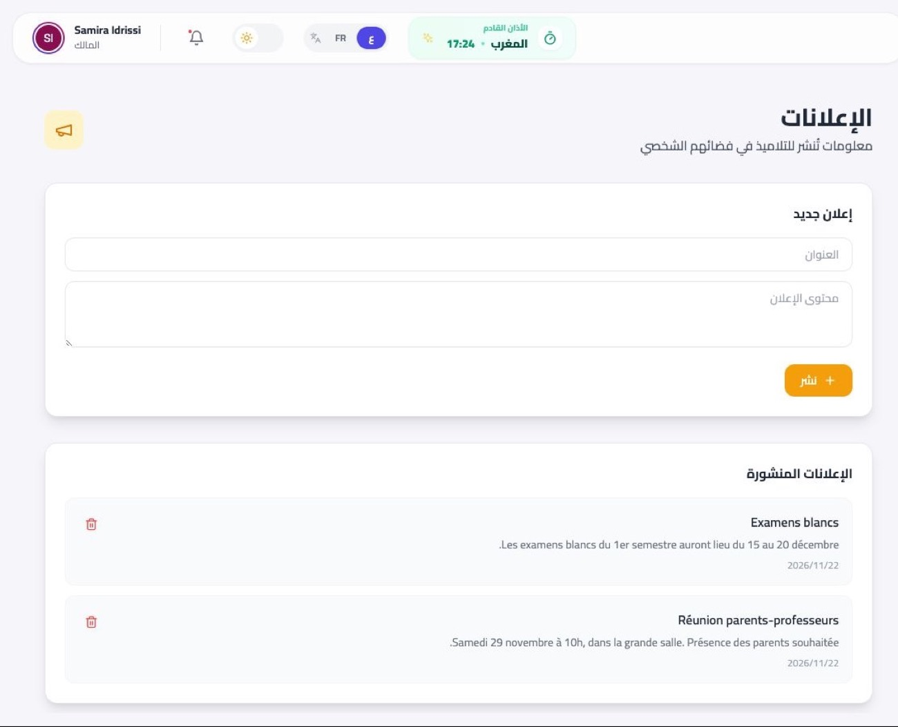
الإعلانات
العطل
في العطل أضف فترات الإغلاق. لا تُحتسب أيام العطل في الحضور، وتظهر للآباء.
واتساب التلقائي
في الإعدادات، اربط رقم واتساب مؤسستك بمسح رمز QR. بعدها تُرسل الغيابات والنقط والإعلانات والأنشطة تلقائياً إلى الآباء من رقمكم. يمكنك اختيار ما يُرسل.
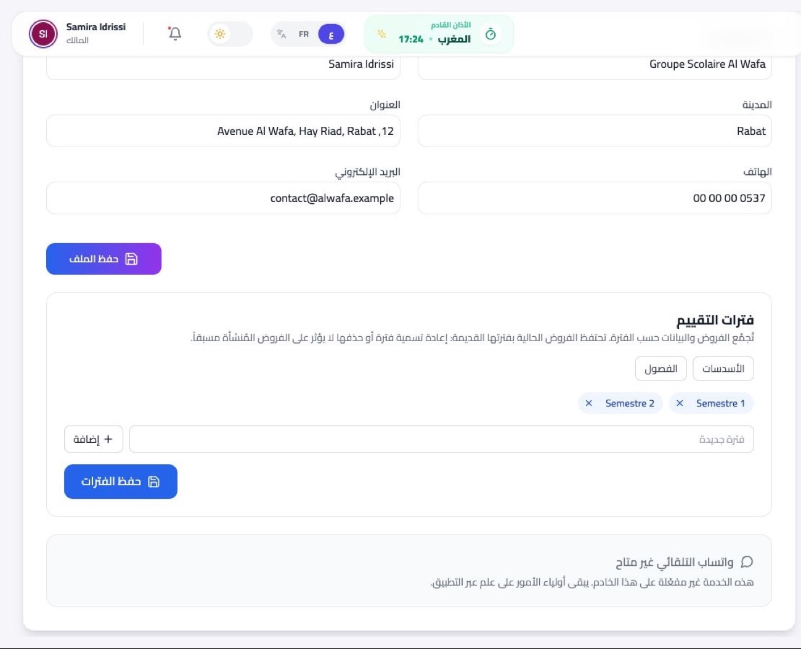
واتساب التلقائي وفترات التقييم في الإعدادات
13النقل المدرسي
الخطوط والمحطات، المركبات والسائقون، الاشتراكات والأداءات الشهرية.
في تبويب المركبات والسائقون أضف المركبات (رقم التسجيل، عدد المقاعد) والسائقين.
في الخطوط والمحطات اختر طريقة التسعير (حسب الخط، حسب المحطة، أو ثمن موحد)، ثم أنشئ الخطوط ومحطاتها بمواعيد الصباح والمساء.
في الاشتراكات أشرك التلاميذ في خط ومحطة، وسجل الأداء الشهري بزر تحصيل.
تبويب المستحقات غير المؤدّاة يعرض من لم يؤدِّ هذا الشهر.
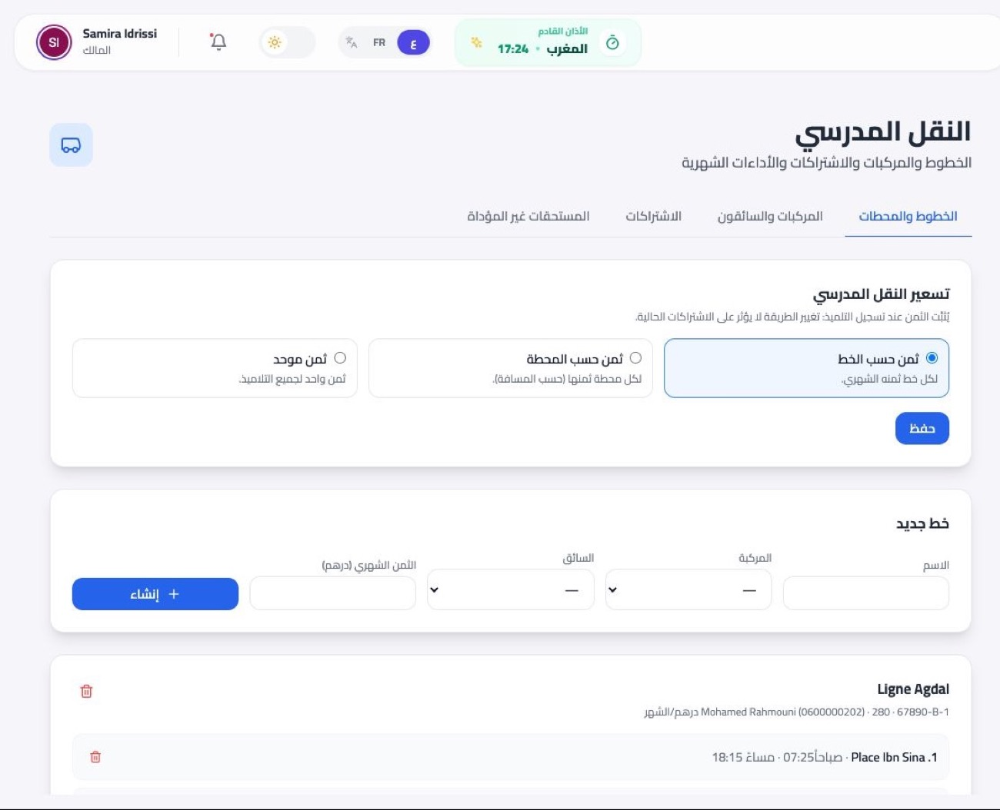
الخطوط والمحطات
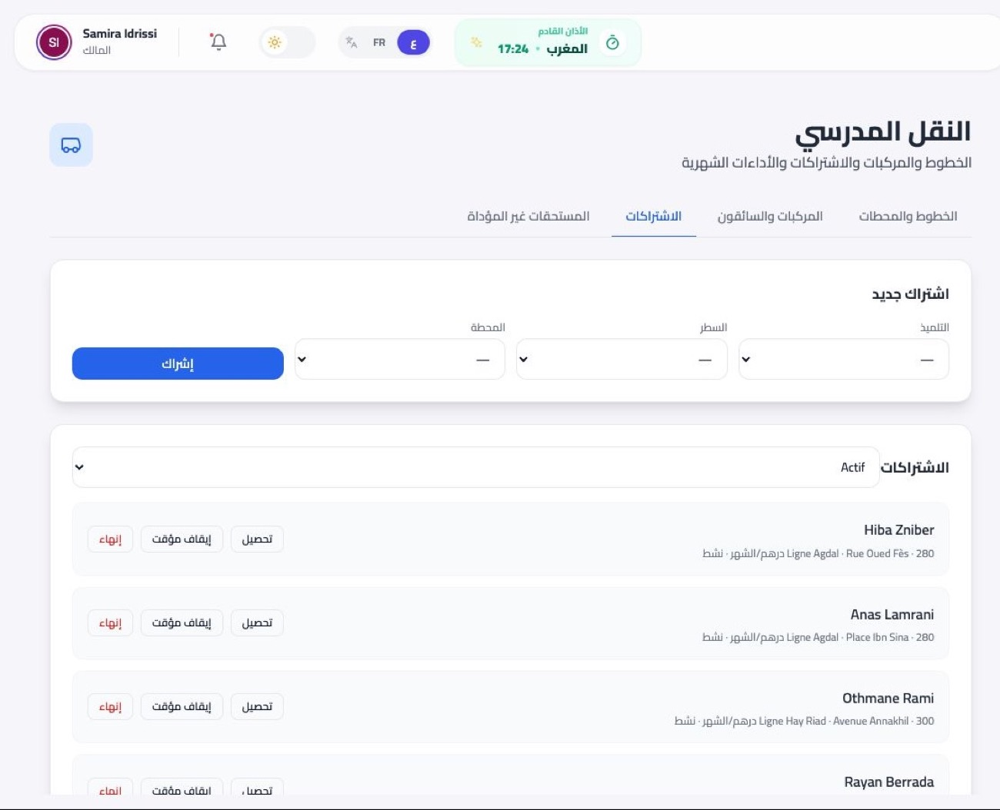
الاشتراكات
14الوثائق
في الوثائق اختر تلميذاً لإنشاء بطاقة المعلومات الفردية أو شهادة التسجيل، بشعار مؤسستك ومعلومات التلميذ، ثم اطبعها. تُطبع الوثيقة بلغة الواجهة.
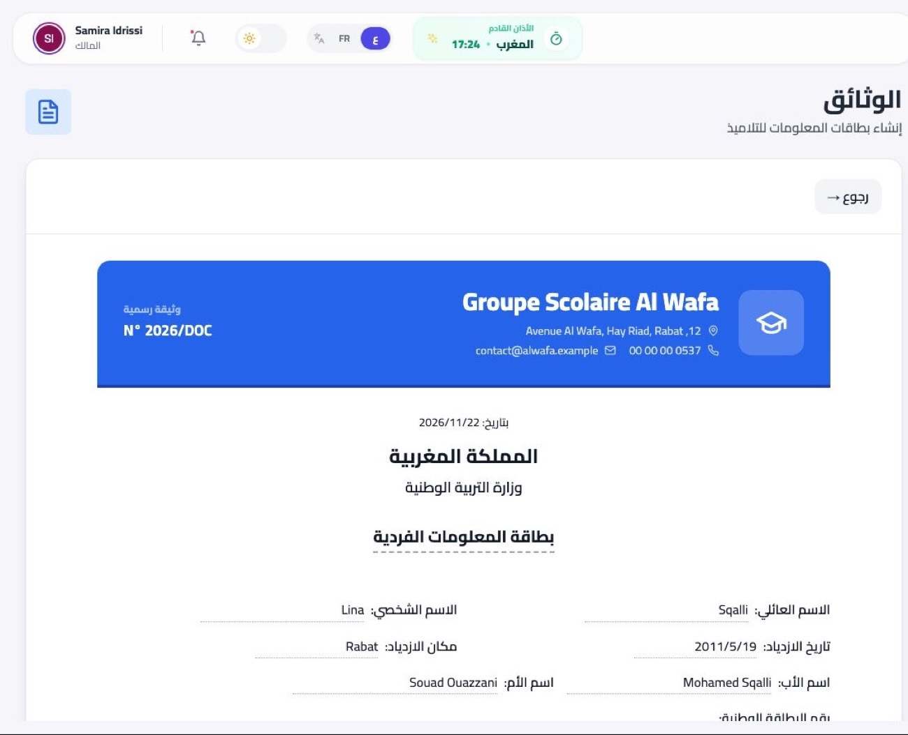
بطاقة المعلومات الفردية
15فضاء السكرتارية
تدخل السكرتارية بحسابها الخاص، وترى لوحة قيادة مبسطة وما تحتاجه يومياً فقط.
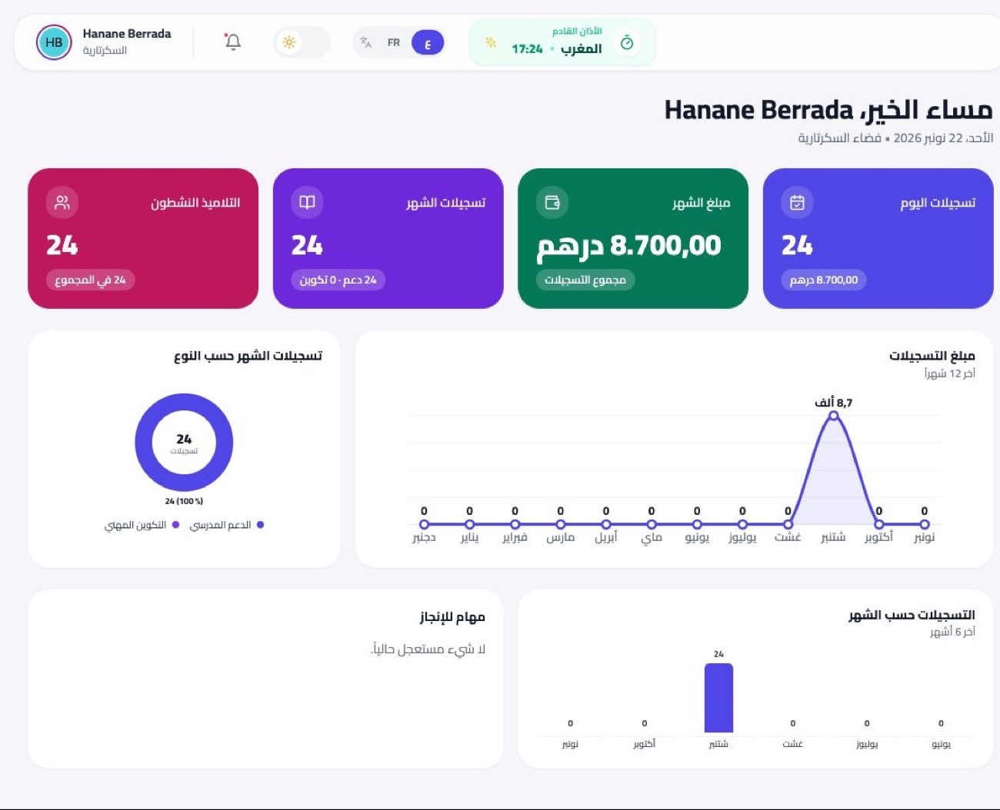
لوحة قيادة السكرتارية
تسجيل التلاميذ والاستيراد، الحضور ومسح QR، النقط والواجبات والأنشطة، ولوج أولياء الأمور، والوصولات. لا تصل السكرتارية إلى الأجور ولا إلى إعدادات المؤسسة.
16عدة مؤسسات وتغيير الباقة
يمكن للمالك تسيير عدة مؤسسات (فروع) بحساب واحد. في جميع المؤسسات يرى ملخص كل مؤسسة (التلاميذ، الحاضرون اليوم، الرصيد المستحق)، ويضيف مؤسسة جديدة حسب حد باقته، وينتقل بينها بنقرة.
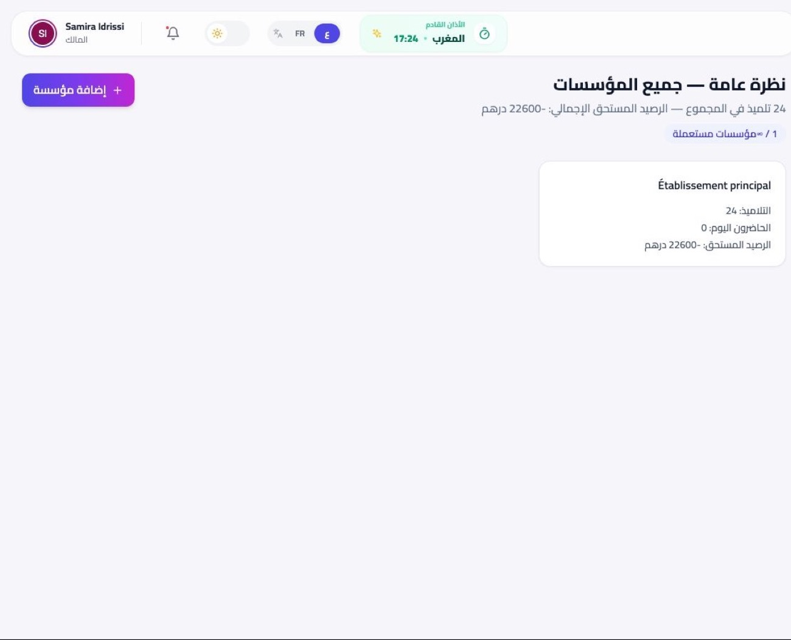
جميع المؤسسات
إذا بلغت حد باقتك (عدد التلاميذ أو المؤسسات)، تقترح المنصة الباقة المناسبة ويمكنك الانتقال إليها فوراً.
17على الهاتف
المنصة كاملة تعمل على الهاتف، بدون تطبيق يُحمَّل: افتح الموقع من المتصفح.
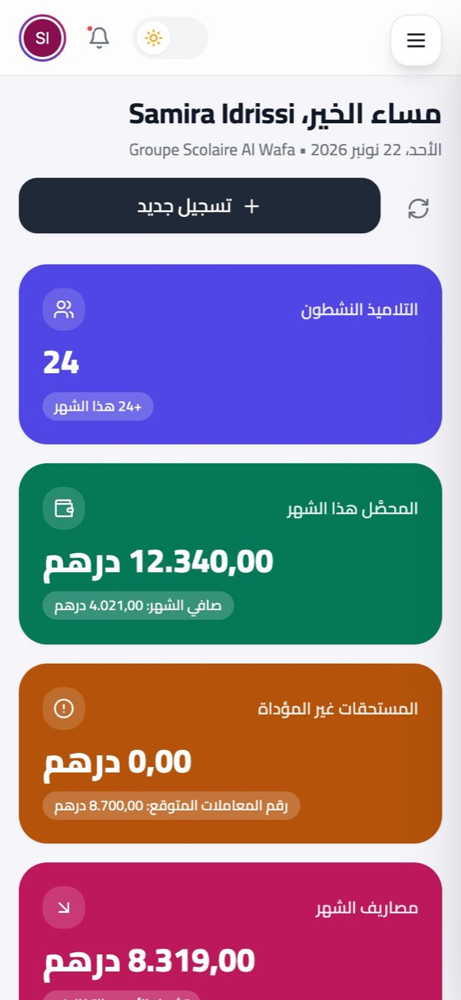
لوحة القيادة
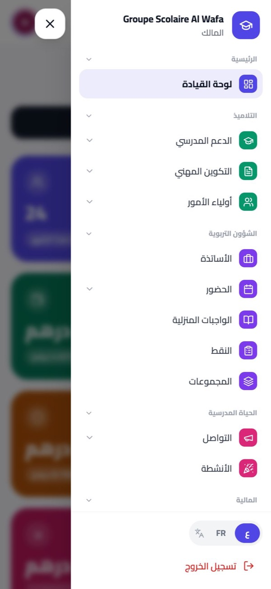
القائمة وزر اللغة
على الهاتف، القائمة خلف زر ☰ في الأعلى، وزر اللغة FR / ع في أسفلها.
تحتاج مساعدة؟
فريق ArwaEduc رهن إشارتك لتكوين فريقك ومرافقتك في بداية الاستعمال.